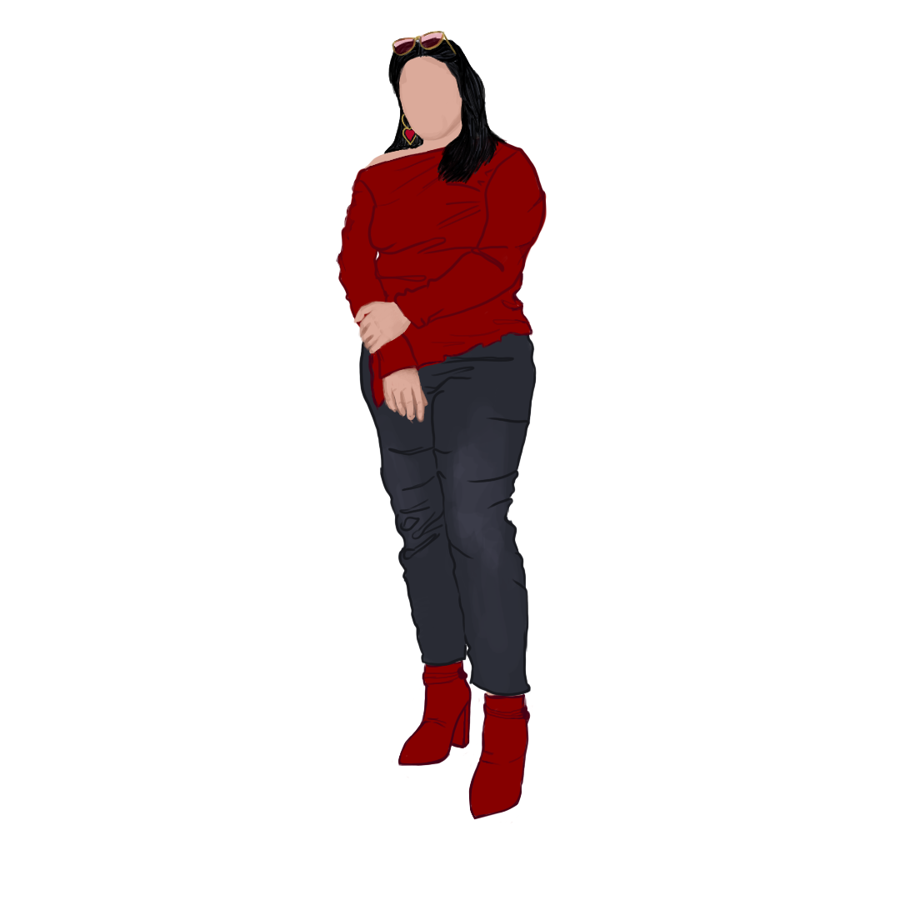

Designer & illustrator · moving into product design
Vidya Sinha
A hand-led designer who sees colour as a conversation, and draws it instead of saying it.
About me
I design by really looking: at light, at colour, at how a body carries clothing. Then I make it real by hand. Nobody showed me; I watched, I practised, I painted.
Everything I make is drawn by me, not generated by AI. Now I'm bringing that eye to product design and UX: noticing the small details that change how something feels.
What I bring
- ColourEvery colour changes depending on who it stands next to.
- ObservationLight, shadow and form, held in memory and drawn from scratch.
- Hand & digital illustrationFrom pencil studies to digital portraits.
- StorytellingEach piece starts from a moment, a feeling or a tradition.
What I value
Design made with care, by hand, from really looking — not from a template.